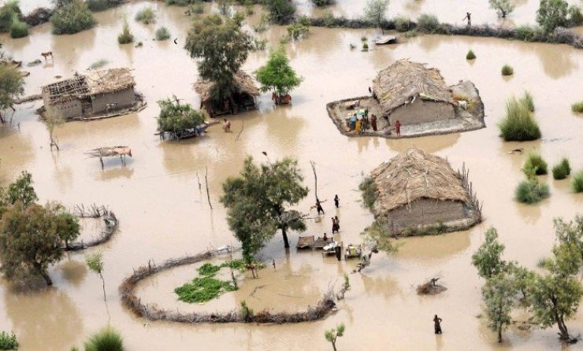

Qu'est-ce que le changement climatique ?
Définition des termes
Le changement climatique, aussi appelé réchauffement climatique est un phénomène mondial, transformant le climat, caractérisé par une augmentation générale des températures moyennes. Celui-ci modifie également de façon durable les écosystèmes et les équilibres météorologiques.
Source : You Matterévolution de la température mondiale
D'après le site European Comission nous pouvons citer que :
"La température moyenne de la planète a subi
Les plus grands climatologues mondiaux pensent que
Ils considèrent qu'une augmentation de 2°C par rapport à la température de la période préindustrielle est le seuil au-delà duquel le risque d'assister à des changements climatiques dangereux, voire catastrophiques, est beaucoup plus élevé. Pour cette raison, la communauté internationale a reconnu la nécessité de maintenir le réchauffement de la planète en dessous de 2 °C."
Causes
Voici quelques exemples de causes du changement climatique, nous pouvons citer :
- La pollution
- La déforestation
- L'élevage
La forêt amazonienne emmagasine près de 90 à 140 milliards de tonnes de CO2, ce qui contribue à réguler le réchauffement climatique, cependant près de 20 % de la forêt amazonienne a disparu en 50 ans
En effet les bovins et les ovins produisent de grandes quantités de méthane lorsqu’ils digèrent leur nourriture ...
Conséquences
Voici quelques exemples de conséquences que nous pouvons observer :
- Le phénomène de montée des eaux
- Les innondations 
- La sécheresse
- La disparition de mers et de lacs
- Le réchauffement des eaux, et le blanchissement des coraux


93% de la barrière de corail à été touchée par le réchauffement climatique. En effet, l'augmentation des températures provoque le blanchissement des coraux, puis leur mort.
Sources : Curioctopus ; European Comission